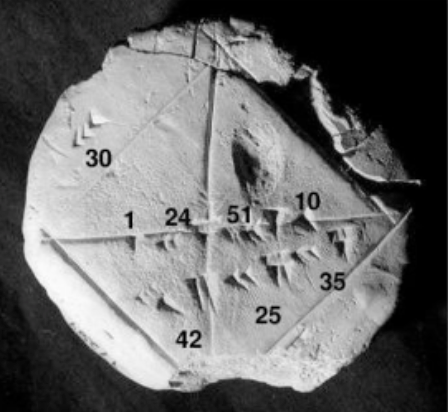
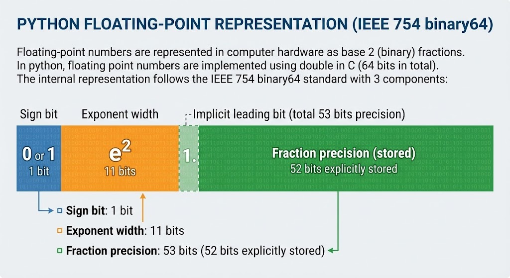

Introduction
What is Numerical Analysis?
Numerical analysis is the study of algorithms that use numerical approximation (as opposed to general symbolic manipulations) for problems of mathematical analysis.
"This does not require a very precise calculation. Sometimes the key point is to solve the problems with a (relatively) quick-and-dirty way, comparing to a full analytical solution."
Historical Example: Babylonian Tablet
Dated 1800-1600 BC. Approximation of $\sqrt{2}$:
$$1 + 24/60 + 51/60^2 + 10/60^3$$
$= 1.41421296...$
(Accurate to 6 decimal figures)
Modern Context
"The real speciality of computers is repetition." Your computer can perform boring calculations millions of times. A smarter way provides quick and precise results; a stupid way produces nothing .
The Goal: Have Fun!
Numerical analysis can be entertaining. Sometimes you can do extremely difficult/fancy things with little effort .
Example Question: Have you ever thought of converting a nice piece of tune to sheet music?
The Art of Music
Converting Audio to Sheet Music
Usually a tough job for musicians. Technically speaking, if you can analyze a CD (Rip wave -> Analyze -> MIDI -> Sheet), you can automate it .
The Secret: Catch the Pitch
"Find the key of a tune is nothing magical but a Fourier transformation, right?". If one can scan over all possible pitches and find the ones with highest amplitudes, you can perform wave-to-midi conversion.
Implementation with Python + SciPy
It is not difficult to use Python to do this job. The workflow:
- Prepare source wave file.
- Read wave as NumPy array.
- For each time interval, perform Fourier transformation (SciPy) for target frequencies.
- Record amplitudes as a function of pitch and time.
- Clean up (remove noise/harmonics).
- Write to MIDI using MidiUtil package.
Conceptual Example: A440
Using the standard pitch A440 (440 Hz).
Loading the Wave (Interactive)
Output
Conceptual Example: Fourier Transform
Analyzing the frequency components.
Output
Result: A sharp peak at 440 Hz!
Music Theory: Frequencies
We need to know which frequencies to analyze. We use the MIDI number formula:
We consider range $21 \le m \le 108$ (88 keys) .
Processing the Data
1. Spectrogram
Create a 2D array of amplitudes per key per time step (e.g., 1/16 second intervals). This generates a lot of noise and harmonics .
2. Filtering (The "Magic" Step)
- Sort keys by amplitude for each time interval.
- Calculate "pedestal" (average of lower-amplitude keys) and subtract it.
- Apply threshold cut (e.g., 2.50).
- Remove isolated notes and nearby harmonics .
3. Output
Join the blocks and write to MIDI. Convert MIDI to Sheet Music using software .
Performance Tests
Test 1: Simple Scales
8 single notes, C4 to C5. Code works perfectly.
Test 2: Chords
C4+E4+G4, etc. Code handles multiple sine waves successfully.
Test 3: Real Song (Dvořák: Humoresque)
Analyzed recording of Yo-Yo Ma + Itzhak Perlman. Result is "not so trivial." Code captures the main idea but real audio is messy. Analyzing a wave and catching the right pitch is a research-level topic.
"All the work done here is already a nice demo of numerical analysis (and it is FUN!)."
Errors in Computation
The Calculator Experiment
If you pick a calculator, insert a number, and press $\sqrt{}$ many times, you reach "1". This is the simplest show of computation uncertainty .
Types of Errors
1. Blunders / Bugs
The #1 cause. Typographical errors, wrong data files, human error.
2. Random Errors
Rare but possible. Unstable power, noise, cosmic rays flipping bits .
3. Approximation Errors
Due to the selected algorithm (e.g., truncating higher order terms in a Taylor series) .
4. Roundoff Errors
Floating point numbers have finite precision. Errors occur at the end of digits .
Floating Point Arithmetic
Bits, Bytes, and IEEE 754
- Integers: In Python, integers have unlimited precision (long types).
- Floats: Implemented as C doubles (64 bits). Follows IEEE 754 binary64 standard.
IEEE 754 Breakdown
Data Representation Visualizer
Interact with the binary representation of different data types below.
How LLMs survive low precision
There is no spoon...
The "Spoon is Not Real" Moment
There is no continuous "real number" in computation. 0.1 is not exactly 1/10.
Interactive Demo
Python/JS Calculation:
Result: ...
Machine epsilon is $\sim 2.22 \times 10^{-16}$.
Calculating $\pi$
A classic exercise in numerical analysis to demonstrate error behavior.
Method 1: Polygon Approximation
Approximating a circle by polygons. Start with a hexagon ($S=1$). Use recursive formula:
The Python Code
Output
What goes wrong?
For a large number of sides, $S$ becomes very small. $4 - S^2 \approx 4 - 10^{-12}$. This hits the limit of double precision, causing Roundoff Error.
Calculating $\pi$ by Hand
Method 2: Leibniz Formula
Using trigonometric functions: $\tan(\pi/4) = 1 \rightarrow \arctan(1) = \pi/4$.
Result: Very inefficient! 1,000,000 steps to get $\approx 3.141593$ (only 6 decimals).
Method 3: Improved Leibniz (A Trick)
Pick a smaller $x$. Use $\tan(\pi/6) = 1/\sqrt{3}$. Taylor expansions converge much faster near $x=0$.
Result: With only 30 terms, precision limit is reached! .
Convergence of Arctan Series
Taylor Expansion for $\arctan(x)$
$$\arctan(x) = x - \frac{x^3}{3} + \frac{x^5}{5} - \dots = \sum_{n=0}^{\infty} \frac{(-1)^n x^{2n+1}}{2n+1}$$
Series Comparison
Why is it faster?
Convergence near $x=0$: Taylor expansions are most accurate and converge fastest near the point of expansion.
How Errors Behave
Total error is the sum of Approximation Error (goes down with N) and Roundoff Error (goes up with N).
There is a "sweet spot" ($N \approx 7 \times 10^{10}$) for minimal error using double precision.
Hands-On Session
Tools
Use PythonAnywhere, IPython, or a local environment. Practice importing `math`, `numpy` .
Practice 1: The `decimal` Module
Fix the "Spoon is not real" problem using Python's `decimal` module for arbitrary precision.
Output
Challenge:
Modify the Method 1 (Polygon) code to use `Decimal` objects. See if you can beat the roundoff error!.
Practice 2: Riemann Zeta & Others
Try calculating $\pi$ using the Riemann zeta function:
Or try any of these other crazy formulas :
Euler's Golden Bridge
Before Riemann, there was Euler. In 1737, he discovered a magical identity that connected continuous analysis to discrete number theory.
The Euler Product Formula
The Sum
A sum over all integers (n = 1, 2, 3...). This represents the analytical "wave" behavior of the function.
The Product
A product over all prime numbers (p = 2, 3, 5...). This represents the arithmetic "atomic" structure of numbers.
Why is this Significant?
This identity establishes a fundamental bridge. It proves that the behavior
of the zeta function is entirely determined by the
distribution of prime numbers.
Valid for $Re(s) > 1$.
The 1737 Proof
Euler proved this using the Fundamental Theorem of
Arithmetic (every integer has a unique prime factorization).
He effectively "sieved" out composite numbers from the infinite sum, showing
that summing the integers is mathematically identical to multiplying the
primes.